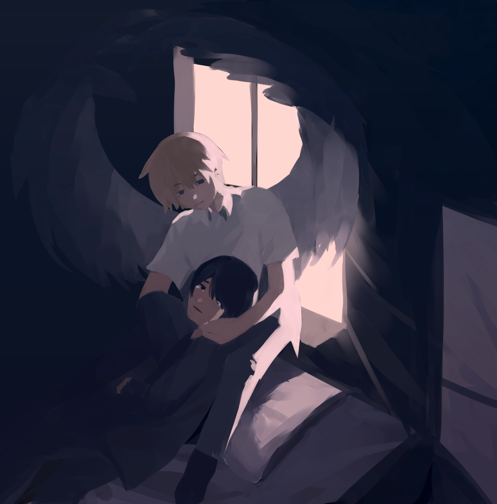

I woke up to find another boy sitting in my bed
Wings sprouted from his back, not like an angel, but a bird
I felt the judgment in his eyes weighing down on me
I couldn’t bear to look him in the face
Because I was too ashamed
Ashamed of what I’d become
He was there last night too, watching me intently
Thinking back to the night before,
I couldn’t believe what I had done,
And neither could he
In the silence of the early morning
There I laid with a weapon of my own making
It was then that I realized
Anything can transform into one
It was my first time
Even though I tried to stay as quiet as possible
He must be here because I caught his attention
It felt like there was something caught in my throat
Or maybe it was in my heart instead
Neither of us spoke a single word,
but I knew what he was thinking
The boy was waiting for something to happen
He was hungry
Perhaps he’ll return again tonight